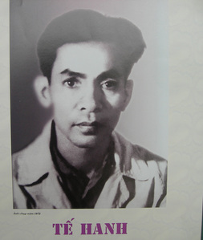

Họ Trần. Sinh ngày 15 tháng 5 năm Tân Dậu (1921) ở làng Đông Yên, phủ Bình Sơn(Quảng Ngãi). Chánh quán: làng giao Thuỷ, cách làng kia một con sông Đậu sơ học rồi ra Huế học trường Khải Định. Ở đó quen Huy Cận, và được Huy Cận chỉ vẽ cho nhiều. Hiện học năm thứ hai ban trung học.
Những bài thơ trích sau đây trong tập Nghẹn nghào đã được giải khuyến khích của Tự lực văn đoàn năm 1939.
Tôi thấy Tế Hanh là một người tinh tế lắm. Tế Hanh đã ghi được đôi nét rất thần tình về cảnh sinh hoạt chốn quê hương. Người nghe thấy cả những điều không hình sắc, không âm thanh như "mảnh hồn làng" trên "cánh buồm giương", như tiếng hat của hương đồng quyến rũ con đường quê nho nhỏ. Thơ Tế Hanh đưa ta vào một cái thế giới rất gần gũi thường ta chỉ thấy một cách mờ mờ, cái thế giới những điềunhững tình cảm ta âm thầm trao cho cảnh vật: sự mỏi mệt say sưa của con thuyền lúc trở về bến, nỗi khổ đau chất chứa trên toa hàng nặng trĩu, những vui buồn sầu tủi của một con đường. Tế Hanh luôn nói dến những con đường. Cũng phải. Trên những con đường ngưng lại biết bao nhiêu bâng khuâng hồi hộp!

.Nhưng Tế Hanh sở dĩ nhìn đời một cách sâu sắc như thế là vì người sẵn có một tâm hồn tha thiết. Hôm đầu gặp người thiếu niên ấy, người rụt rè ngượng nghịu như một chàng rể mới. Nhưng tôi vẫn nhớ đôi mắt. Đôi mắt nồng nàn lạ. Tôi nghĩ ở một người như thế những điều cảm xúc, những nỗi đau xót quá mực thông thường và có khi khác thường. Như khi yêu, người thấy:
Kìa em, lên! Rực rỡ bốn phương trời;
Đôi mắt to ném lửa sáng nơi nơi;
Vừng trán rộng, hào quang loà chói rực,
Ta thấy sáng! Hồn phiêu diêu thoát tục,
Lòng lâng lâng không muốn ước mơ chi,
Mắt lim dim đầu cúi gục chân quỳ...
Tuy lời thơ còn có gì lệch với hồn thơ nhưng không có một tâm hồn đắm đuối không thể viết nên nhưng lời thơ như thế.
Khi thất vọng thi nhân ước cho người yêu chết đi để được ngồi trên mồ nhỏ từng giọt nước thấm xuống tấm thân lạnh lẽo.
Tệ hơn nữa, người muốn hưởng cái thú tàn nhẫn được thấy người yêu, tiếng khóc.
Rách đau thương như lụa xé tơi bời.
Chúng ta sẽ ngạc nhiên và băn khoăn không biết ở những chỗ sâu kín trong lòng ta có gì giống như thế không. Đầu sao, sự thành thực của thi nhân không thể ngờ được.
Nhưng tôi chưa muốn nói nhiều về Tế Hanh. Tế Hanh còn trẻ và cũng mới vào làng thơ, chưa có thể biết rõ những con đường người sẽ đi.
Avril -1941
QUÊ HƯƠNG
Làng tôi ở vốn làm nghề chài lưới:
Nước bao vây cách biển nửa ngày sông.
Khi trời trong, gió nhẹ, sớm mai hồng,
Dân trai tráng bơi thuyền đi đánh cá:
Chiếc thuyền nhẹ hăng như con tuấn mã
Phăng mái chèo mạnh mẽ vượt trường giang.
Cánh buồm trương, to như mảnh hồn làng
Rướn thân trắng bao la thâu góp gió...
Ngày hôm sau, ồn ào trên bến đỗ
Khắp dân làng tấp nập đón ghe về.
“Nhờ ơn trời, biển lặng cá đầy ghe”,
Những con cá tươi ngon thân bạc trắng.
Dân chài lưới, làn da ngăm rám nắng,
Cả thân hình nồng thở vị xa xăm;
Chiếc thuyền im bến mỏi trở về nằm
Nghe chất muối thấm dần trong thớ vỏ.
Nay xa cách lòng tôi luôn tưởng nhớ
Màu nước xanh, cá bạc, chiếc buồm vôi,
Thoáng con thuyền rẽ sóng chạy ra khơi,
Tôi thấy nhớ cái mùi nồng mặn quá!
(Nghẹn ngào1939)
LỜI CON ĐƯỜNG QUÊ
Tôi, con đường quê nhỏ chạy lang thang
Kéo nỗi buồn không dạo khắp làng
Đến cuối thôn kia hơi cỏ vướng
Hương đồng quyến rũ hát lên vang
Từ đấy mình tôi cỏ mọc đầy
Dọc lòng hoa dại ngát hương lây
Tôi ôm đám lúa, quanh nương sắn
Bao cái ao rêu nước đục lầy
Những buổi mai tươi nắng chói xa
Hồn tôi lóng lánh ánh dương sa
Những chiều êm ả tôi thư thái
Như kẻ nông phu trở lại nhà
Tôi đă từng đau với nắng hè
Thịt da rạn nứt bởi khô se
Đã từng điêu đứng khi mưa lụt
Tôi lở, thân tôi rã bốn bề
Chia sẻ cùng người nỗi ấm no
Khi mùa màng được, nỗi buồn lo
Khi mùa màng mất. Tôi vui cả
Với những tình quê buổi hẹn hò
Tôi sống mê man tránh tẻ buồn
Miệt mài, hể hả, đắm say luôn
Tôi thâu tê tái trong da thịt
Hương đất, hương đồng chẳng ngớt tuôn...
(Nghẹn Ngào 1937)
VU VƠ
Những ngày nghỉ học tôi hay tới
Đón chuyến tàu đi, đến những ga
Tôi đứng bơ vơ xem tiễn biệt
Lòng buồn đau xót nỗi chia xa
Tôi thấy tôi thương những chuyến tàu
Ngàn đời không đủ sức đi mau
Có chi vướng víu trong hơi máy
Mấy chiếc toa đầy nặng khổ đau
Bánh nghiến lăn lăn quá nặng nề
Khói phì như nghẹn nỗi đau tê
Lâu lâu còi rúc nghe rền rĩ;
Lòng của người đi kéo kẻ về
Kẻ về không nói bước vương vương
Thương nhớ lan xa mấy dặm đường
Lẽo đẽo tôi về theo bước họ
Tâm hồn ngơ ngẩn nhớ muôn phương.
(Nghẹn ngào)
AO ƯỚC
Anh là kẻ say mê, nhưng nhút nhát;
Không hiểu giùm, em lại nỡ cho anh
Là không yêu, là một kẻ vô tình.
Anh tức quá, đem lòng ao ước tệ:
Nếu em chết! Chắc là anh có thể
Tỏ mối tình lặng lẽ quá sâu thâm:
Anh đến nơi em nghỉ giấc ngàn năm
Ngồi điên dại sầu như cây liễu rủ
Anh không uống, anh không ăn, không ngủ,
Anh khóc than, than khóc đến bao giờ
Nước mắt anh lầy lội cả nấm mồ
Nhỏ từng giọt xuống thân em lạnh lẽo.
Rồi anh chết, anh chết sầu, chết héo;
Linh hồn anh thất thểu dỗi hồn em.
Và ở đâu kia, ở cõi đời đêm
Chắc em chẳng nghi ngờ tình anh nữa...
(Nghẹn ngào)